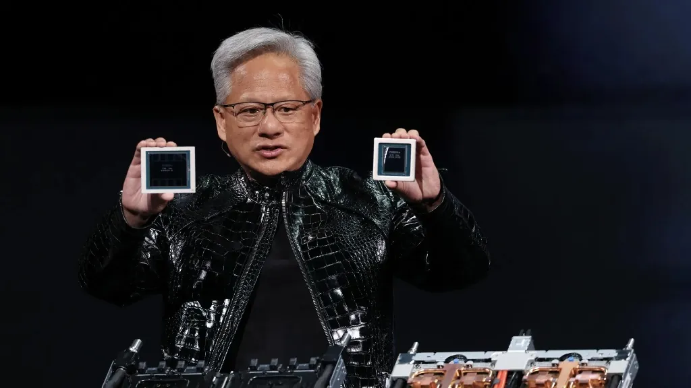

Intel's 40-Year PC Monopoly Ends Today: Nvidia's N1X Chip Arrives at Computex 2026 — Every Spec, Every OEM, and What It Means for Your Next PC

On Friday, May 30, 2026, Nvidia, Microsoft, and Arm Ltd each posted the exact same four words on X simultaneously: "A new era of PC." No product image. No marketing copy. Just coordinates — GPS coordinates for the Taipei Music Center, where Nvidia CEO Jensen Huang was scheduled to take the stage at Computex on June 1. By Friday evening, Intel's stock had fallen 5.1%. Dell had surged nearly 33%. The semiconductor industry understood immediately what was happening. After three years of leaks, denials, and near-misses, the Nvidia N1X chip — the company's first ARM-based laptop processor for Windows — was finally real, and it was hours away from being announced.
This is not just a new processor launch. It is the most consequential shift in the Windows PC architecture since AMD broke Intel's monopoly in 1999 with the first Athlon chip. Here is everything we know — confirmed specs, launch partners, what changed in the stock market, and what it means for every Windows user buying a laptop in the next twelve months.
Key Takeaways
- Nvidia's N1X is being revealed at Computex on June 1 — the company's first ARM-based Windows laptop chip, combining 20 ARM v9.2 CPU cores with 6,144 CUDA cores (RTX 5070-class GPU) in a single processor
- Unified memory architecture supports up to 128GB LPDDR5X shared between CPU and GPU — directly challenging Apple M4's approach, but on Windows
- CUDA — the world's most widely used AI/ML compute platform — comes natively onboard for the first time in any Windows laptop processor
- Confirmed OEM partners: Dell (XPS), Lenovo (Legion, IdeaPad, Yoga), Asus (ProArt), MSI, and Microsoft Surface
- Intel shares fell 5.1% on the day before announcement; Dell surged 32.9%; Microsoft gained 5.4% ($173 billion added to market cap)
- Microsoft is simultaneously launching AI agent software at Build that runs locally on N1X-powered PCs — no cloud required
- First devices target pre-holiday 2026; broader availability into early 2027
Table of Contents
- The Tweet That Moved Markets — What Happened Friday
- The N1X Chip: Complete Confirmed Specifications
- Why N1X Is Different From Every Previous Windows ARM Chip
- Confirmed Launch Partners: Every Laptop Coming With N1X
- Market Reaction: The Numbers That Tell the Story
- Microsoft's Local AI Play — What Build Adds to the Picture
- What This Means for Intel and AMD
- N1X vs Snapdragon X Elite vs Apple M4 — Full Comparison
- What It Means for Students and Developers
- Real Risks and Open Questions
- Frequently Asked Questions
- Conclusion
The Tweet That Moved Markets — What Happened Friday
At approximately 9am Pacific Time on Friday, May 30, three companies posted the same message simultaneously on X: Nvidia, Microsoft, and Arm Ltd. The message read "A new era of PC," followed by the GPS coordinates 25.0476° N, 121.5170° E — the Taipei Music Center, venue for Jensen Huang's Computex keynote scheduled for June 1, 2026.
The reaction was immediate. Within hours of the posts, DigiTimes reported that Dell had an embargoed XPS laptop launch powered by the N1X chip scheduled for May 31. VideoCardz published screenshots confirming Dell briefing materials. Supply chain sources cited by WindowsForum confirmed that at least Lenovo, Asus, and Dell had units already moving toward production. Simultaneously, Windows head Pavan Davuluri posted his own cryptic hint on X: "Something new is coming for developers. And no, it's not a new OS version. See you at Build next week!"
The PC industry had been expecting this announcement for months. As analyst Ming-Chi Kuo noted: "Nvidia and Microsoft have been deepening their AI partnership, but the PC silicon piece was the missing part of the puzzle." After the announcement, that piece had been placed.
The N1X Chip: Complete Confirmed Specifications
⚡ Nvidia N1X — Confirmed Technical Specifications
| CPU Architecture | ARM v9.2, 20 cores |
| GPU Architecture | Blackwell (RTX 5070-class), 6,144 CUDA cores |
| Manufacturing Process | TSMC 3nm |
| Memory Architecture | Unified (CPU + GPU share same pool) |
| Maximum Memory | 128GB LPDDR5X |
| AI Accelerator | Nvidia Tensor Cores (Blackwell generation) |
| Software Stack | Full CUDA + cuDNN + TensorRT (first in a laptop CPU) |
| x86 Emulation | Yes — Prism (same as Qualcomm Snapdragon X) |
| Confirmed TDP | High-performance (Legion 7 variant: 245W adapter) |
| Windows Compatibility | Windows 11 ARM-native + full x86 emulation |
| Expected Price Tier | Premium (TSMC 3nm + LPDDR5X cost basis) |
The architectural decision that defines the N1X is the unified memory pool. In traditional Windows laptops, the CPU has its own RAM and the GPU (if discrete) has its own VRAM — two separate memory subsystems that pass data between them through a relatively slow interconnect. The N1X uses a single pool of up to 128GB LPDDR5X that both the CPU cores and the GPU's CUDA cores access with equal speed and zero transfer overhead. This is architecturally identical to what Apple introduced with its M-series chips in 2020 — and it is the reason Apple Silicon laptops became dramatically better at AI workloads than comparably-priced Intel machines. Nvidia is now bringing the same architecture to Windows.
The inclusion of the full CUDA software stack is arguably even more significant than the hardware. CUDA is the programming framework on which virtually all AI and machine learning research, production inference, and scientific computing runs. PyTorch, TensorFlow, JAX, and most ML libraries have CUDA as their primary compute backend. For the first time, a Windows laptop will carry this entire ecosystem onboard — without requiring a separate discrete GPU. Every AI/ML developer who currently needs a desktop with an RTX card, or an expensive workstation laptop, will have a portable alternative.
Why N1X Is Different From Every Previous Windows ARM Chip
Windows-on-ARM has a troubled history that makes every new announcement in this space met with legitimate scepticism. The story starts in 2019 with the Surface Pro X, powered by a custom Qualcomm SQ1 chip. It was thin, beautiful, and deeply frustrating — app compatibility was inconsistent, x86 emulation was slow, and performance per watt did not justify the premium. In 2024, Qualcomm's Snapdragon X Elite changed the picture substantially with genuinely competitive performance and dramatically improved x86 emulation. The Copilot+ PC initiative launched on the back of it. But Snapdragon's GPU is MediaTek-class — respectable for display work and light AI inference, but nowhere near the CUDA ecosystem that software developers actually depend on.
Nvidia's N1X changes two things that no previous Windows ARM chip could claim:
First, it brings real GPU compute to ARM Windows. The 6,144 CUDA cores running on Blackwell architecture deliver approximately RTX 5070-class graphics performance. For reference, a standalone RTX 5070 desktop card retails for roughly $599. The N1X packages that compute capability alongside the CPU in a single unified chip. This means a student doing PyTorch experiments, a developer building AI applications, a 3D designer rendering scenes, or a gamer playing AAA titles — all of them get a GPU that existing ARM Windows chips cannot touch.
Second, it brings the CUDA software ecosystem. Apple's M-series chips have excellent GPU compute, but they run Metal — Apple's proprietary GPU API. CUDA is universally supported across the AI/ML ecosystem in a way Metal never has been. When Nvidia says the N1X includes "the full CUDA software stack," it means every library, every model, every research codebase that runs on an RTX desktop GPU will run natively on an N1X laptop — no recompilation, no approximation, no workarounds.
Confirmed Launch Partners: Every Laptop Coming With N1X
Based on confirmed leaks, supply chain reports, and OEM briefing materials surfaced before the Computex embargo lifted, the following N1X device lineup is expected:
| OEM | Device | Target Market | Status |
|---|---|---|---|
| Dell | XPS Laptop (N1X) | Premium consumer / creator | Confirmed — shown May 31 under embargo |
| Lenovo | Legion 7 15N1X11 (gaming, 245W adapter) | Gaming / AI workstation | Confirmed — internal model number leaked |
| Lenovo | IdeaPad Slim 5, Yoga Pro 7, Yoga 9 2-in-1 | Consumer / productivity | Confirmed — multiple variants leaked |
| Asus | ProArt Laptop | Creative professionals, designers | Confirmed via Asus tease |
| MSI | At least one gaming model | Gaming | Confirmed via supply chain reports |
| Microsoft Surface | New Surface variant (flagship launch platform) | Enterprise / developer / premium consumer | Confirmed via sources; exact model unspecified |
The Lenovo Legion 7 configuration is particularly telling. A 245W power adapter signals a high-performance thermal envelope — this is not a fanless, ultra-thin device aimed only at word processing and light AI inference. Nvidia and its partners are targeting the full performance spectrum, from premium productivity devices all the way to workstation-class gaming laptops.
Market Reaction: The Numbers That Tell the Story
The stock market's response to the May 30 announcement teaser was more informative than any press release. The day before Computex, before a single device had been officially revealed:
The Intel decline is self-explanatory — a new credible competitor in a market Intel has largely controlled for decades is straightforwardly bad for Intel's revenue projections. Dell's extraordinary 32.9% surge reflects the market's read that Dell, as a confirmed launch partner, is perfectly positioned to capture the first wave of N1X-powered premium laptop demand. Microsoft's gain reflects the software opportunity: a new hardware platform means new licensing, new Surface sales, and new Azure AI services sold in combination with local AI PC experiences.
Qualcomm's 3.2% gain is the most counterintuitive result and the most insightful. Analysts noted that Nvidia's entry does not undermine Qualcomm's existing Windows-on-ARM position — it validates it. Every developer and IT manager who sees Nvidia commit to ARM Windows becomes more confident that Windows-on-ARM is a real, long-term platform rather than an experiment. Qualcomm benefits from that confidence even as it gains a new competitor.
Microsoft's Local AI Play — What Build Adds to the Picture
The hardware announcement alone would be significant. What makes it transformative is the software layer Microsoft is simultaneously deploying at Build 2026 in San Francisco. Microsoft is introducing a new class of locally-running AI agents for Windows that perform autonomous, multi-step tasks on the PC — reading files, writing emails, navigating applications, managing calendars — without any cloud connectivity required.
This addresses the most serious practical limitation of current AI agent technology. Running AI agents in the cloud costs money per query, introduces latency, creates privacy concerns about what data leaves the device, and requires a consistent internet connection. A local AI agent running on an N1X chip — with 128GB of unified memory able to hold a large language model natively, and Blackwell Tensor Cores providing fast inference — addresses all four limitations simultaneously.
For enterprise users, local AI agents mean corporate data never leaves the device. For students, it means AI assistance that works in lecture halls, on planes, and in libraries without Wi-Fi. For developers, it means building AI applications on top of a CUDA-native Windows platform that matches the data center stack they already know.
"Something new is coming for developers. And no, it's not a new OS version." — Pavan Davuluri, Windows Head, Microsoft. The "something new" is a locally-running AI agent platform that requires exactly the kind of on-device compute the N1X provides.
What This Means for Intel and AMD
Intel and AMD have dominated Windows PC processors with their x86 architecture since 1981 for Intel and 1975 for AMD — a combined duopoly of four decades. No competitor has successfully challenged x86 Windows at scale. Qualcomm's Snapdragon X Elite was the first genuinely competitive ARM chip in Windows laptops, but it did not shake Intel's position dramatically because its GPU compute was limited and its developer ecosystem was narrow compared to Intel's.
Nvidia's N1X is qualitatively different because it brings CUDA. Intel's response will likely involve accelerating its own neural processing unit (NPU) roadmap and leaning harder on its Xe GPU compute capabilities. AMD's integrated Radeon graphics — genuinely strong in recent generations — will face a direct performance comparison against RTX 5070-class compute that will be unflattering in GPU-intensive workloads.
The x86 ecosystem's most durable advantage remains software compatibility. There are millions of Windows applications compiled specifically for x86 that require emulation on ARM — and emulation always carries a performance penalty. Nvidia's N1X uses the same Prism emulation layer as Qualcomm Snapdragon X, which has proven capable enough for most productivity software. But the edge cases — specific enterprise software, industrial applications, older games — will remain better on Intel and AMD hardware for the foreseeable future.
N1X vs Snapdragon X Elite vs Apple M4 — Full Comparison
| Specification | Nvidia N1X | Qualcomm Snapdragon X Elite | Apple M4 (for context) |
|---|---|---|---|
| CPU Cores | 20 ARM v9.2 | 12 Oryon v1 | 10 (4P + 6E) |
| GPU Compute | 6,144 CUDA (Blackwell RTX 5070-class) | Adreno (4 TFLOPS approx.) | 10-core GPU (3.6 TFLOPS) |
| GPU API | CUDA + DirectX 12 | DirectX 12 (no CUDA) | Metal (no CUDA) |
| Max Unified Memory | 128GB LPDDR5X | 64GB LPDDR5X | 32GB (M4 base) |
| Manufacturing Node | TSMC 3nm | TSMC 4nm | TSMC 3nm |
| AI/ML Framework | Full CUDA + TensorRT + cuDNN | DirectML (limited CUDA support) | Core ML / Metal Performance Shaders |
| OS | Windows 11 (ARM + x86 emulation) | Windows 11 (ARM + x86 emulation) | macOS only |
| Launch Status | June 1, 2026 | Available now | Available now |
| Expected Price Tier | Premium ($1,500+) | Mid–Premium ($999+) | Premium ($1,299+) |
What It Means for Students and Developers
For students studying computer science, machine learning, data science, or any STEM discipline that involves computational modelling, the N1X represents a genuine step change in what a laptop can do.
Currently, a student who needs to run PyTorch experiments, train small neural networks, or work with GPU-accelerated data processing either needs a desktop with a discrete RTX card (expensive and immobile) or they pay for cloud GPU time on AWS, Google Colab, or Azure (subscription costs that add up over a degree programme). An N1X laptop provides RTX 5070-class CUDA compute in a portable device — meaning coursework, personal projects, and internship preparation can all happen locally, without cloud costs, without internet dependency, and without being tied to a desk.
For creative students — video editors, 3D designers, architecture students working in Blender or Rhino — the RTX-class GPU in the N1X means hardware-accelerated rendering that previously required a workstation. A ProArt laptop from Asus or a Dell XPS with the N1X is a genuinely professional-grade creative machine in a form factor that fits in a backpack.
For Students Considering Their Next Laptop Purchase
If you are planning a laptop purchase in mid-to-late 2026 and your coursework involves any AI/ML development, 3D rendering, video editing, or gaming, it is worth waiting for N1X devices to launch and be reviewed before committing to a current Intel or Qualcomm machine. The first reviews of Dell XPS N1X performance against Snapdragon X Elite and Intel Core Ultra will answer whether the premium pricing is justified. Expect first independent benchmarks in June-July 2026.
Real Risks and Open Questions
Every transformative platform launch comes with real risks, and intellectual honesty requires naming them rather than treating the announcement as unconditionally positive news.
App compatibility will be imperfect at launch. Windows-on-ARM's Prism emulation layer handles the vast majority of x86 applications well — but enterprise-specific software, certain industrial CAD tools, and games using kernel-level anti-cheat (which does not yet support ARM) will have issues. This is the same challenge Qualcomm faced with Snapdragon X Elite and it takes time and ecosystem investment to resolve.
Pricing may be prohibitive. TSMC 3nm manufacturing combined with LPDDR5X memory at 128GB capacity means N1X devices will cost more than equivalent Intel or Snapdragon configurations. The baseline DGX Spark desktop unit (Nvidia's desktop N1X predecessor) retailed at $3,999. Laptop implementations should be cheaper, but budget-conscious buyers should expect a premium over existing ARM Windows laptops.
Battery life is an open question. The Legion 7 variant's 245W power adapter suggests a high-performance thermal profile that is not consistent with all-day battery life. Whether the N1X achieves the power efficiency gains of Apple M4 in lighter workloads — where Snapdragon X Elite currently matches or beats Apple Silicon — will only be known from independent reviews.
Driver and software maturity. Nvidia has decades of Windows GPU driver experience, which is a genuine advantage. But a new ARM CPU architecture combined with new unified memory management introduces complexity. First-generation hardware launches often have firmware and driver issues that take one to two software updates to fully resolve.
Frequently Asked Questions
What is the Nvidia N1X chip?
The Nvidia N1X is Nvidia's first ARM-based Windows laptop processor. It combines 20 ARM v9.2 CPU cores with 6,144 CUDA cores (Blackwell architecture, RTX 5070-class GPU performance) in a single chip with a unified memory architecture supporting up to 128GB LPDDR5X RAM. It includes Nvidia's full CUDA software stack — the first time CUDA has been available natively in a laptop CPU.
When is the Nvidia N1X being announced?
Jensen Huang is making the N1X announcement at his GTC Taipei keynote on June 1, 2026 at the Taipei Music Center during Computex 2026. Dell's embargoed XPS laptop was shown on May 31. Computex opens June 2 for broader announcements.
Which laptops will use the Nvidia N1X chip?
Confirmed partners include Dell (XPS laptop), Lenovo (Legion 7 gaming, IdeaPad Slim 5, Yoga Pro 7, Yoga 9), Asus (ProArt creative laptop), MSI (gaming), and Microsoft Surface as the flagship launch platform. First devices target pre-holiday 2026.
What happened to Intel stock when Nvidia N1X was announced?
On May 30 — the day before the Computex announcement — Intel shares fell 5.1% to $114.68. Dell surged 32.9% to $421.30 (new 52-week high). Microsoft rose 5.4% to $450.24, adding approximately $173 billion in market capitalisation.
How does the N1X compare to Apple M4?
Both use unified memory architecture on 3nm TSMC processes. The N1X's key advantage is the CUDA software ecosystem and RTX 5070-class GPU compute — significantly stronger for AI/ML workloads and game performance. The M4's advantages are macOS app optimisation, mature driver stack, and proven power efficiency. The N1X runs Windows, making it directly relevant to the enterprise and development ecosystem where macOS is often impractical.
Will N1X laptops run all Windows apps?
Most apps, yes — the same Prism x86 emulation layer used in Qualcomm Snapdragon X devices handles the vast majority of Windows software. Edge cases include some enterprise software, certain industrial tools, and games with kernel-level anti-cheat that has not yet been updated for ARM. App compatibility will improve through 2026-2027 as more software is updated to ARM-native versions.
Conclusion
On Friday morning, three companies posted four words simultaneously on X and moved Intel's stock by five percent without showing a single product. That is how much weight the market placed on what Nvidia was about to do at Computex. As of June 1, the N1X is real — confirmed specs, confirmed OEM partners, confirmed Microsoft software support, and a launch timeline that puts the first devices in consumers' hands before the 2026 holiday season.
Whether this reshapes the Windows PC market as thoroughly as Apple Silicon reshaped the Mac market in 2020 will depend on the answers to questions that benchmarks, reviews, and real-world use will answer over the coming months: battery life, app compatibility breadth, pricing at retail, and whether the CUDA promise translates into a development experience that AI/ML engineers actually prefer over their current RTX desktop setups.
What is not in doubt is the significance of the moment. Intel and AMD have shared the Windows PC processor market since before many of their customers were born. Nvidia has just walked through the door.
This article will be updated as Jensen Huang's keynote delivers official specifications and pricing. Bookmark this page for live coverage updates throughout Computex 2026.

Marcus J. Holloway
Senior Tech Educator & AI Researcher
Technology educator with 15+ years of experience in AI, chip architecture, and computer science. Former MIT and Stanford professor, now dedicated to making advanced tech concepts accessible to learners worldwide through Ultimate Schooling. Has covered every major processor launch since Intel Core i7 and tracks semiconductor markets professionally.
💬 Questions or Comments?
Are you planning to buy an N1X laptop? Have a question about how the N1X compares for your specific use case? Leave a comment below!